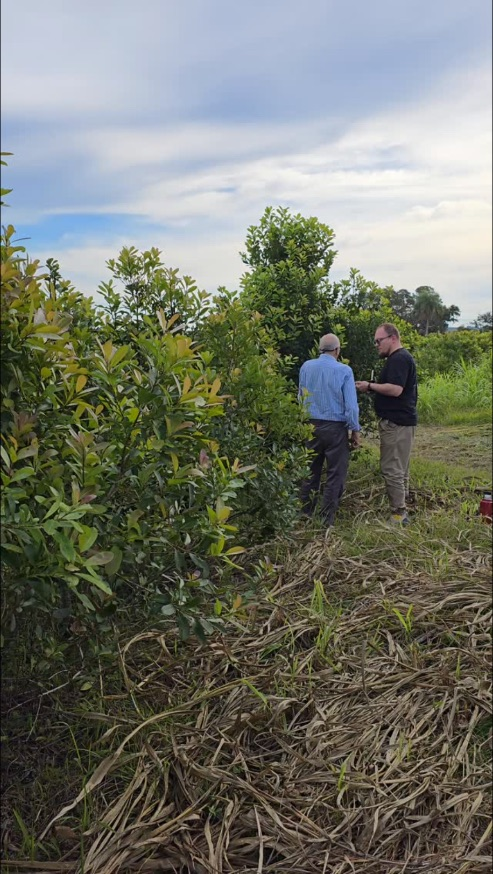

Esta hoja viene de Anna Park.
Alimentos orgánicos de productores que visitamos, para tu casa o tu comercio.
De lunes a viernes de 8 a 17 h y sábados de 10 a 14 h.
 Tres Generaciones barbacuá, 500 g: $ 3.488,68Stock 36
Tres Generaciones barbacuá, 500 g: $ 3.488,68Stock 36 Anna Park orgánica, 500 g: $ 9.414,41Stock 23
Anna Park orgánica, 500 g: $ 9.414,41Stock 23 Grapia Milenaria, 500 g: $ 2.983,59Stock 64
Grapia Milenaria, 500 g: $ 2.983,59Stock 64 Kalena Selecta despalada, 500 g: $ 5.319,60Stock 53
Kalena Selecta despalada, 500 g: $ 5.319,60Stock 53 Atiguá orgánica, 500 g: $ 6.685,25Stock 21
Atiguá orgánica, 500 g: $ 6.685,25Stock 21 Caballo Negro barbacuá, 500 g: $ 4.363,44Stock 51
Caballo Negro barbacuá, 500 g: $ 4.363,44Stock 51 Gurisa orgánica despalada, 500 g: $ 10.808,47Stock 26
Gurisa orgánica despalada, 500 g: $ 10.808,47Stock 26 IVÚ clásica orgánica, 500 g: $ 6.389,80Stock 20
IVÚ clásica orgánica, 500 g: $ 6.389,80Stock 20 Lapacho Rosa con palo, 500 g: $ 5.269,55Stock 44
Lapacho Rosa con palo, 500 g: $ 5.269,55Stock 44 La Obereña orgánica, 500 g: $ 5.308,88Stock 26
La Obereña orgánica, 500 g: $ 5.308,88Stock 26 Arapeguá canchada orgánica, 500 g: $ 8.015,96Stock 21
Arapeguá canchada orgánica, 500 g: $ 8.015,96Stock 21 Arasy agroecológica, 500 g: $ 6.881,88Stock 5
Arasy agroecológica, 500 g: $ 6.881,88Stock 5 PURA orgánica, 500 g: $ 7.550,40Stock 20
PURA orgánica, 500 g: $ 7.550,40Stock 20 Lapacho Rosa para tereré, 500 g: $ 5.037,54Stock 15
Lapacho Rosa para tereré, 500 g: $ 5.037,54Stock 15
Yerbas en el depósito hoy, con precio y stock.
Ver todasFuimos a ver de dónde sale.



-
Tres Generaciones
Los Helechos, Misiones
Harry seca su yerba a leña, en horno de barbacuá. Cubre el suelo con pasturas en lugar de usar glifosato.
-
Anna Park
Reserva ecológica Anna Park
Erik Barney, su creador, cuida un yerbal orgánico dentro de la reserva. Ahí todavía se mastica la hoja cruda, como hacían los guaraníes.
-
El Pampa Orgánico
Baradero, Buenos Aires
Hace 30 años que hacen agricultura biodinámica, y abren la tranquera para mostrarla. De su monte salen las nueces pecán.
Nació sin querer, como las semillas.
No salió de un gran plan: fue una idea de Maximiliano Carroz que fue creciendo.
- San Marcos Sierras
- Una casa con huerta, donde se molía el trigo para el pan.
- Una tienda online
- Un puente entre el productor y quien elige su producto.
- Un depósito en Mataderos
- Hoy guarda stock para que cada comercio vuelva a encontrar lo que eligió.
Todo el catálogo, con precio y stock.
Precios y stock al 25 de noviembre de 2026.
Tu comercio, con su propia lista.
Para dietéticas, almacenes naturales, tiendas online y gastronomía.
- Lista por CUIT
- Tus precios, con tu CUIT.
- Pedido mínimo
- a confirmar
- Cobertura
- CABA y Buenos Aires. Al interior, por transporte.
- Tu pedido
- Entra directo al sistema, listo para facturar.
Para elegir yerba, espelta y vinagre.
Cómo elegir una yerba mate
Moliendas, secado y sabor.
Harina de espelta
Qué es y cómo usarla.
Vinagre de manzana con madre
Qué es la madre del vinagre.
¿Elaborás alimentos? Presentanos tu producto
- Marca y descripción
- Localidad de elaboración
- Presentaciones
- RNE y RNPA, si corresponde
- Certificaciones vigentes
- Capacidad y forma de entrega
- Lista de precios mayorista
- Datos de contacto
Av. Eva Perón 5161, Mataderos.
Lunes a viernes de 8 a 17 h y sábados de 10 a 14 h.
| Lunes | 8 a 17 h |
|---|---|
| Martes | 8 a 17 h |
| Miércoles | 8 a 17 h |
| Jueves | 8 a 17 h |
| Viernes | 8 a 17 h |
| Sábado | 10 a 14 h |
| Domingo | Cerrado |
WhatsApp 11 6805-8275info@semillaviva.com.ar